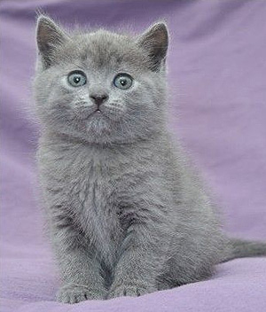

katės
Katės flora, fauna - Skelbiu.lt

X Dėl geresnės Skelbiu.lt paslaugų kokybės naudojame slapukus (angl. cookies).Naršydami toliau, patvirtinate, kad sutinkate su slapukais. Tai bet kada galėsite atšaukti, pakeisdami nustatymus. Skelbiu.lt slapukų politika . Lankomiausias
skelbimų portalas LT RU ( 0 ) Įsiminti skelbimai ( 0 ) Peržiūrėti skelbimai Paieškos ( 0 ) Prisijungti Registruotis Katės, Flora, fauna, Visi skelbimai (620) Gauti naujus skelbimus: Ekrane El. paštu + Įdėti skelbimą Įsiminti skelbimai (0) Skelbimų: 620 Atnaujinti viršuje Naujausi viršuje Atnaujinti viršuje Pigiausi viršuje Brangiausi viršuje
NEPRALEISKITE NAUJŲ SKELBIMŲ
Katės, Flora, fauna, Visi skelbimai
Gaukite naujus skelbimus į ekraną Gaukite naujusskelbimus el. paštu Klaipėdos r. spalio 21 d. 3
Bengalijos kates
Veislynas "Crafty Bengals" siūlo įsigyti bengalijos kačiuką. Kačiukų gimimo data 2020.07.06 Kačiukai paskiepyti , turi kilmės dokumentus , čipą ir pasą . Kaina neveisimui 800 eur. Kittens available for booking Date of birth – 2020.07.06 Father:... Yra kilmės dokumentas Kaunas, ... spalio 25 d. 2Kilmingų britų mažyliai
Kilmingų britų mažyliai gimę rugpjūčio 21d. (Dvieju mėnesių amžiaus) Likę tik berniukai! Kačiukai yra nukirminti, paskiepyti pirmais skiepeliais. Begalo meilūs, patinka jiems ant rankų, kai juos glosto ir myluoja. Labai žaismingi, auga mažų... Yra kilmės dokumentas Kaunas, ... spalio 20 d. 2Burmila ir alergiškiems žmonėms
Mūsų burmilas galite pamatyti LRT televizijos laidoje "Mūsų gyvūnai" 2020 03 29. ( Kūrėja Rasa Eilunavičienė) . Smagaus žiūrėjimo visiems besidomintiems. 2020 09 27 sulaukėme kačiukų vados. Laisvi trys berniukai. Rezervacijos... Yra kilmės dokumentas 700 € Šiauliai, ... spalio 20 d. 1Jūs dar dar neturite raštuoto kačiuko ?
MES JUMS GALIME PADĖTI ! Veislynas DALRO TABBI priima užsakymus kačiukų įsigijimui 2021 metams ! Tėvų kilmės dokumentai ir titulus patvirtinantys sertifikatai , pateikiami visiems įsigyjantiems kačiuką ar katytę . Apie veislyno kačių ir... Yra kilmės dokumentas Vilnius, ... prieš 3 d. 1Meino meškėnų veislės berniukai
Siūlome rezervuoti veislyno Udeiman meino meškėnų kačiukus berniukus juodą rainą su baltu ir juodą su baltu, kurie pratinti nuo mažens prie rankų, yra komunikabilūs ir drąsūs Visi mažyliai mūsų namus palieka ne anksčiau 3 mėn amžiaus,... Yra kilmės dokumentas Vilnius spalio 25 d. 1Dovanojami kačiukai
Dovanojami mieli 2,5 mėn. amžiaus kačiukai. Visos keturios mergaitės: 3 margos, pūkuotos, ir 1 juoda su baltu kakliuku. Katytės tvarkingai vaikšto į kraiko dėžę, ėda sausą bei šlapią kačių maistą. Vilniaus miesto bei Vilniaus raj. ribose mielai... Vilnius, ... prieš 7 val. 1Britu trumpaukiai kačiukai
Kačiukus jau galima rezervuoti. Rugsėjo 25 dieną sulaukėme pirmosios 5 britų trumpaplaukių vados kačiukų. Kačiukai stambūs plačiu galvyčiu tankaus kailiuko. Vadoje yra 1 mergytė ir 4 berniukai. Visi kačiukai yra mėlynos BRI A spalvos, kaip ir... 300 € Vilnius prieš 1 d. 1Šokoladines cinamono spalvos kilmingi britukai
Britų trumpaplaukių veislynas AdorableCat*LT siulo rezervuoti Britų trumpaplaukių veislės šokoladines spalvos kaciukus. Kaciukai tures kilmės dokumentus, europasą, mikročipą,bus paskiepyti ir dehelmintizuoti. Kaciukai labai meili draugiški,... Yra kilmės dokumentas Klaipėdos r. prieš 1 d. 1Dovanojami Kaciukai, Lapkricio 11d bus 2 menesiai
Dovanojami Kaciukai, ieskome jaukiu, graziu namu nes siuo metu auga saugiuose namuose, moka graziai elgtis su maistu ir daro visus savo reikalus tvarkingai dezuteje. Lapkricio 11d bus 2 menesiai. Galime pristatyti I namus jeigu gyvenate Palangos... Vilnius spalio 26 d. 1Britų trumpaplaukiai
Parduodami britų trumpaplaukiai kačiukai, gimę rugpjūčio 12 dieną. Savarankiškai valgo sausą ir šlapią maistelį, naudojasi kraiko dėžute, žvalūs, linksmi, kačiukai nukirminuoti. Tėvai gyvena kartu. 180 € Reklama Druskininkai prieš 1 d. 1Dono Sfinksai
Š.m. rugsėjo 27diena gime nauja vada mergaite ir berniukas. Kaciukai bus vieliuriniai kaip ju mama. Paskutine foto tevai.Jau nukirminti. Pagal laika bus paskepinti ir tures vit pasa.Galima jau rezervuoti. I naujus namus gales keliauti gruodžio... 300 € Kauno r., ... prieš 2 d. 1Atiduodami kačiukai
Apie 3 mėnesių broliukas ir sesutė ieško šiltų namų. Prijaukinti, išvalyti nuo išorinių ir vidinių parazitų. Pilko kailio katytė švelni, prieraiši, rūpestinga. Rudaplaukis katinukas - žaismingas medžiotojas. Abu mėgsta šuns draugiją. Akademija,... Kauno r. prieš 2 d. 1Škotų nulėpausiai ir stačiaausiai
Nuostabus, 2020-08-19 gimę škotukai ieško mylinčių šeimininkų. Katei tai pirma vada. Gimė keturi mažyliai. Dabar jau visiškai savarankiški. Gerai išauklėti, puikiai naudojasi draskykle ir tualetu. Auga su vaikais,todėl yra mylimi ir mylintys.... 150 € Kaunas prieš 2 d. 1Dovanojami kačiukai
Rainytė ieško mylinčios šeimos! ~ 3 mėnesių amžiaus. Katytė jau lankėsi veterinarijos klinikoje ir buvo paskiepyta, naudojasi kraiko dėžute. Labai aktyvi ir žaisminga. Išlydėjus brolius ir seses į naujas šeimas jai labai reikalinga žmogaus... Vilnius prieš 11 val. 1Britų trumpaplaukiai kačiukai
Britų trumpaplaukių kačių veislynas Kačių slėnis pasiruošęs išleisti į naujus namus paskutinį kačiuką.Gali vykti į užsienį, visi dokumentai paruošti.Kačiukas sveikas, labai gero charakterio, žaismingas. Turime kilmės dokumentus,... Yra kilmės dokumentas Šiauliai prieš 3 d. 1Dovanojami rainieji gražuoliai!
Rainieji katinėliai 2mėnesių (2 mergytės ir 1 berniukas) ieško naujų šiltų namų! Katinukai daro tvarkingai į dėžutę, valgo savarankiškai. Labai judrūs, mieli ir energingi. Mamytė paskutinėje nuotraukoje. Gyvena šiek tiek už Rėkyvos, neturint... Vilnius prieš 4 val. 1Dingo juodas su baltu katinas
VILNIUS , Antakalnis , Mileišiškių-Pragiedrulių SB , Šatrijos Raganos g. 2020.10.09 naktį dingo juodas su baltom letenom ir baltu pilvuku katinas . Ką nors žinančius arba radusius prašome padėti susigrąžinti katiną namo . Dosniai atsidėkosiu .... Ieško Šalčininkų r. spalio 25 d. 1Dovanoju kačiukus
Dovanoju kačiukus 1,5 mėn. Mergytė ir berniukas. Patys ėda, prie žmonių pripratę, pukuoti nebus. Šalčininkų raj. Galiu atvežti iki Vilniaus. Geriausias būdas susisiekti su manimi paskambinus arba parašyti žinutė tel. 869223567 Vilniaus r. spalio 25 d. 1Mažiukai kačiukai
Penki bengalų mišrūnai neapsakomo grožio kačiukai ieško namų. Mes mielai juos visus pasiliktume sau, bet esame tvirtai įsitikinę, kad šie mieli mažyliai galėtų pradžiuginti ir kitų gerų žmonių širdis. Šių kačiuku neveisėme, o kaina tokia, kiek... 150 € Kaišiadorių r. prieš 1 d. 1 Parduota per 3 d.Škotų nulėpausiai ir stačiaausiai kačiukai
Rugsėjo 16d gimė šeši škotukai. Naujų namų ieško dvi nulėpausės katytės ir vienas nulėpausis berniukas, bei stačiaausė katytė. Kačiukai jau maitinasi įvairiu maistu, naudojasi kraiku, yra išdykę ir meilūs. Kačiukų mama stačiaausė, tėtis... 170 € Kaunas spalio 26 d. 1 Parduota per 3 d.Britų trumpaplaukiai kačiukai
Parduodami britų trumpaplaukiai balti kačiukai gimę 2020-09-06. Trys berniukai ir viena mergaitė. Sveiki ir švarūs. Gamtinius reikalus atlieka tik į kraiką. Kačiukai yra nukirminti. Spalio 29 d bus paskiepyti ir visi turės skiepų pasus. Po... 190 € Raseinių r. spalio 24 d. 1Dovanoju katytę
Dovanoju katytę,gimusi Rugpjūčio 15 d.žavi,judri ir pasiruošusi savarankiškam gyvenimui be mamos,valgo pati,naudojasi dėžute.Raseiniai,tel.867701664.Raseinių raj.atvežtume. Vilnius prieš 15 min.Škotu stačiausiai berniukai gražios spalvos
Galima rezervuoti škotukus. Yra 4 stačiausiai berniukai. Labai gražios spalvos: -sidabrine šinšila -sidabrinis su juodu raštu -sidabrinis su rudų raštu -juoda šinšila. Gyvai atrodo daug gražiau. Gimimo data rugsėjo 1d. Kačiukai... 180 € Šiauliai prieš 27 min.Kanados katyte
Rezervuojama katyte i naujus namus keliaus lapkricio gale kai bus pilnai savarankiska info telefonu 300 € 1 2 3 4 5 6 Įsiminti skelbimai Įdėkite skelbimąPopuliarios paieškos:
skotu nulepausiai
kaciukai vilnius
kates kaunas
kaciukai kaunas
sunys
kaciukai klaipeda
dovanojami kaciukai
savannah
kaciu draskykles
kaciukai
skotu staciaausis kaunas
bengalijos kates klaipeda kaunas
skotu staciaausiai
dovanoja kates siauliai
akcijos
Prisijunk ir rask savo įsimintus skelbimus visur – kompiuteryje, telefone, planšetėje ARBA Jungtis su Facebook Jungtis su Google Skelbiu.lt pagalba: +370 664 55727 Darbo laikas: I-V 08:20 - 17:00 Naudojimo taisyklės / D.U.K. Kontaktai Svetainės struktūra D I G I N E TPosted by Jack  Read more
Read more  Comments (15)
Comments (15)  2020.10.30 06:09
2020.10.30 06:09